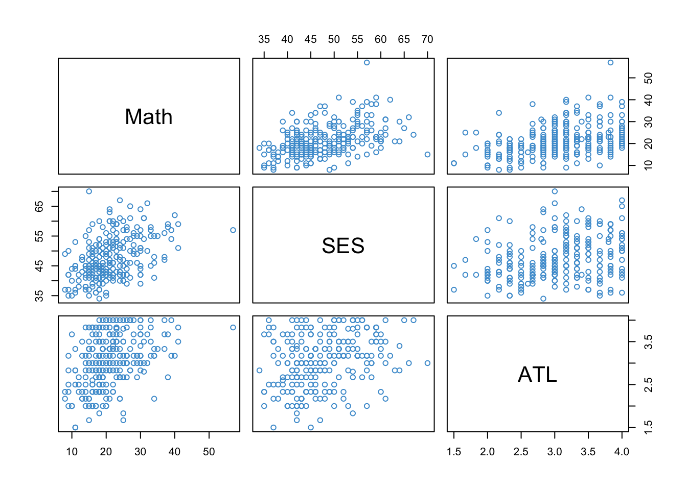
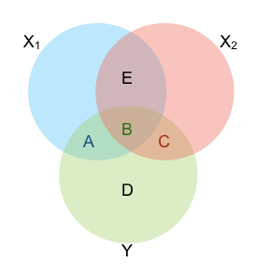
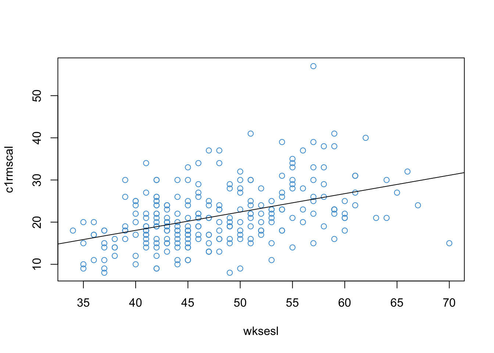

By understanding these interpretations, we will have a better idea of how regression is used in research. Each interpretation also provides a different perspective on the importance of using multiple predictor variables, rather than only a single predictor.
3.1.1 Prediction
Prediction means “to make known beforehand”. This was the original use of regression (https://en.wikipedia.org/wiki/Regression_toward_the_mean#History). In a regression contex, prediction means using observations of \(X\) to make a guess about yet unobserved values of \(Y\). Our guess is \(\hat Y\), and this is why \(\hat Y\) is called the “predicted value” of \(Y\).
When making predictions, we usually want some additional information about how precise the predictions will be. In OLS regression, this information is provided by the standard error of prediction (fox-2016?):
This statistic quantifies our uncertainty when making predictions based on observations of \(X\) that were not in our original sample. The prediction errors for the NELS example in Chapter 2 are represented in Figure 3.1 as a gray band around the regression line.
We can see in the figure that the error band is quite wide. So, we might wonder how to make our predictions more precise. On way to do this is by including more predictors in the regression model – i.e., multiple regression.
To see why including more predictors improves the precision of predictions, note that the standard error of prediction shown in Equation 3.1 increases with \(SS_{\text{res}}\), which is the variation in the outcome that is not explained by the predictor (see Section 2.4). In most situations, \(SS_{\text{res}}\) is the largest contributor the prediction error. As we will see below, one way to reduce \(SS_{\text{res}}\) is by adding more predictors to the model.
3.1.1.1 More about prediction
There has been a resurgence of interest in prediction in recent years, especially in machine learning. Although the methods used in machine learning are often more complicated than OLS regression, the basic problem is the same. Rather than theoretically derived prediction error (Equation 3.1), machine learning often uses the accuracy and precision of out-of-sample predictions as the main criterion for judging the quality of a model, which is often called “cross validation.” Machine learning has also introduced some new techniques for choosing which predictors to include in a model (i.e., “variable selection”). We will touch on these topics later in the course, although our main focus is OLS regression.
Regression got its name from a statistical property of predicted scores called “regression toward the mean.” To explain this property, let’s assume \(Y\) and \(X\) are z-scores (i.e., both variables have \(M = 0\) and \(SD = 1\)). Recall that this implies that \(a = 0\) and \(b = r_{XY}\), so the regression equation reduces to
\[\hat Y = r_{XY} X\]
Since \(|r_{XY} | ≤ 1\), the absolute value of the \(\hat Y\) must be less than or equal to that of \(X\). And, since both variables have \(M = 0\), this implies that \(\hat Y\) is closer to the mean of \(Y\) than \(X\) is to the mean of \(X\). This is sometimes called regression toward the mean.
3.1.2 Causation
A causal interpretation of regression means that that changing \(X\) by one unit will change \(E(Y|X)\) by \(b\) units. This is interpreted as a claim about the expected value of \(Y\) “in real life”, not simply a claim about the mechanics of the regression line. In terms of our example, a causal interpretation would state that improving students’ SES by one unit will, on average, cause Math Achievement to increase by about half a percentage point.
The gold standard for inferring causality is to randomly assign people to different treatment conditions. In a regression context, treatment is represented by the independent variable, or the \(X\) variable. While randomized experiments are possible in some settings, there are many types of variables that we cannot feasibly randomly assign (e.g., SES).
The concept of an omitted variable is used to describe what happens when we can’t (or don’t) randomly assign people to treatment conditions. An omitted variable is any variable that is correlated with both \(Y\) and \(X\). In our example, this would be any variable correlated with both Math Achievement and SES (e.g., School Quality). When we use random assignment, we ensure that \(X\) is uncorrelated with all pre-treatment variables – i.e., randomization ensure that there are no omitted variables. However, when we don’t use random assignment, our results may be subject to omitted variable bias.
The overall idea of omitted variable bias is the same as “correlation \(\neq\) causation”. The take-home message is summarized in the following points, which are stated in terms of the our NELS example.
Any variable that is correlated with Math Achievement and with SES is called an omitted variable. One example is School Quality. This is an omitted variable because we did not include it as a predictor in our simple regression model.
The problem is not just that we have an incomplete picture of how School Quality is related to Math Achievement.
Omitted variable bias means that the predictor variable that was included in the model ends up having the wrong regression coefficient. Otherwise stated, the regression coefficient of SES is biased because we did not consider School Quality.
In order to mitigate omitted variable bias, we want to include plausible omitted variables in our regression models – i.e., multiple regression.
3.1.2.1 Omitted variable bias*
Omitted variable bias is nicely explained by Gelman and Hill (gelman-2007?), and a modified version of their discussion is provided below. We start by assuming a “true” regression model with two predictors. In the context of our example, this means that there is one other variable, in addition to SES, that is important for predicting Math Achievement. Of course, there are many predictors of Math Achievement (see Section Section 2.1), but we only need two to explain the problem of omitted variable bias.
Write the “true” model as:
\[
Y = a + b_1 X_1 + b_2 X_2 + \epsilon
\tag{3.2}\]
where \(X_1\) is SES and \(X_2\) is any other variable that is correlated with both \(Y\) and \(X_1\) (e.g., School Quality).
Next, imagine that instead of using the model in Equation 3.2, we analyze the data using the model with just SES, leading to the usual simple regression:
The problem of omitted variable bias is that \(b_1 \neq b^*_1\) – i.e., the regression coefficient in the true model is not the same as the regression coefficient in the model with only one predictor. This is perhaps surprising – leaving out School Quality gives us the wrong regression coefficient for SES!
To see why, start by writing \(X_2\) as a function of \(X_1\).
Notice that in the last line, \(Y\) is predicted using only \(X_1\), so it is equivalent to Equation 3.3. Based on this comparison, we can write
\(a^* = \color{orange}{a + \alpha}\)
\(b^*_1 = \color{green}{b_1 + b_2\beta}\)
\(\epsilon^* = \epsilon + \nu\)
The equation for \(b^*_1\) is what we are most interested in. It shows that the regression parameter in our one-parameter model (\(b^*_1\)) is not equal to the “true” regression parameter using both predictors (\(b_1\)).
This is what omitted variable bias means – leaving out \(X_2\) in Equation Equation 3.3 gives us the wrong regression parameter for \(X_1\). This is one of the main motivations for including more than one predictor variable in a regression model – i.e., to avoid omitted variable bias.
Notice that there two special situations in which omitted variable bias is not a problem:
When the two predictors are not related – i.e., \(\beta = 0\).
When the second predictor is not related to \(Y\) – i.e., \(b_2 = 0\).
3.1.3 Explanation
Many uses of regression fall somewhere between prediction and causation. We want to do more than just predict outcomes of interest, but we often don’t have a basis for making the strong assumptions required for a causal interpretation of regression coefficients. This grey area between prediction and causation can be referred to as explanation.
In terms of our example, we might want to explain why eighth graders differ in their Math Achievement. There are large number of potential reasons for individual difference in Math Achievement, such as
Student factors
attendance
past academic performance in Math
past academic performance in other subjects (Question: why include this?)
…
School factors
their ELA teacher
the school they attend
their peers
…
Home factors
SES
maternal education
paternal education
parental expectations
…
When the goal of an analysis is explanation, it usual to focus on the proportion of variation in the outcome variable that is explained by the predictors, i.e., R-squared (see Section 2.4). Later in the course we will see how to systematically study the variance explained by individual predictors, or blocks of several predictors (e.g., student factors).
Note that even a long list of predictors such as that above leaves out potential omitted variables. While the addition of more predictors can help us explain more of the variation in Math Achievement, it is rarely the case that we can claim that all relevant variables have been included in the model.
The ECLS-K focuses on children’s early school experiences beginning with kindergarten and ending with eighth grade. It is a multisource, multimethod study that includes interviews with parents, the collection of data from principals and teachers, and student records abstracts, as well as direct child assessments. In the eighth-grade data collection, a student paper-and-pencil questionnaire was added. The ECLS-K was developed under the sponsorship of the U.S. Department of Education, Institute of Education Sciences, National Center for Education Statistics (NCES). Westat conducted this study with assistance provided by Educational Testing Service (ETS) in Princeton, New Jersey.
The ECLS-K followed a nationally representative cohort of children from kindergarten into middle school. The base-year data were collected in the fall and spring of the 1998–99 school year when the sampled children were in kindergarten. A total of 21,260 kindergartners throughout the nation participated.
The subset of the ECLS-K data used in this class was obtained from the link below.
The codebook for this subset of data is available on our course website. We will be using a small subset of \(N = 250\) cases from the full example data set (the ECLS250.RData data)
We focus on the following three variables.
Math Achievement in the first semester of Kindergarten. This variable can be interpreted as the number of questions (out of 60) answered correctly on a math test. Don’t worry – the respondents in this study did not have to write a 60-question math test in the first semester of K! Students only answered a few of the questions and their scores were re-scaled to be out a total of 60 questions afterwards.
Socioecomonic Status (SES), which is a composite of household factors (e.g., parental education, household income) ranging from 30-72.
Approaches to Learning (ATL), which is a teacher-reported measure of behaviors that affect the ease with which children can benefit from the learning environment. It includes six items that rate the child’s attentiveness, task persistence, eagerness to learn, learning independence, flexibility, and organization. The items have 4 response categories (1-4), d so that higher values represent more positive responses, and the scale is an unweighted average the six items.
3.2.1 Correlation matrices
As with simple regression, correlation is the building block of multiple regression. So, we will start by examining the correlations in our example. We also introduce a new way of presenting correlations, the correlation matrix. The notation developed in this section will appear throughout the rest of the chapter.
In the scatter plots below, the panels are arranged in matrix format. The variable named on in the diagonal panels appears on the vertical (\(Y\)) axis in its row and the horizontal (\(X\)) axis in its column. For example, Math Achievement is on the vertical axis in the first row and the horizontal axis in the first column. Notice that plots below the diagonal are just mirror image of the plots above the diagonal.
Code
load("ECLS250.RData")attach(ecls)example_data <-data.frame(c1rmscal, wksesl, t1learn)names(example_data) <-c("Math", "SES", "ATL")pairs(example_data , col ="#4B9CD3")

Figure 3.2: ECLS Example Data.
The format of Figure Figure 3.2 is the same as that of the correlation matrix among the variables, which is shown below.
Code
cor(example_data)
Math SES ATL
Math 1.0000000 0.4384619 0.3977048
SES 0.4384619 1.0000000 0.2877015
ATL 0.3977048 0.2877015 1.0000000
Again, notice that the entries below the diagonal are mirrored by the entries above the diagonal. We can see that SES and ATL have similar correlations with Math Achievement (.44 and .40, respectively), and are also moderately correlated with each other (.29).
In order to represent the correlation matrix among a single outcome variable (\(Y\)) and two predictors (\(X_1\) and \(X_2\)) we will use the following notation.
in this notation, we replace use the \(r_{Y1} = \text{cor}(Y,X_1)\) is the correlation between two variables \(Y\) and \(X_1\). Note that each correlation coefficient \(r\) has two subscripts that tell us which two variables are being correlated. For the outcome variable we use the subscript \(Y\), and for the two predictors we use the subscripts \(1\) and \(2\). As with the numerical examples, the values below the diagonal mirror the values above the diagonal. So, we really just need the three correlations shown in the matrix below.
The three correlations are interpreted as follows:
\(r_{Y1}\) - the correlation between the outcome (\(Y\)) and the first predictor (\(X_1\)).
\(r_{Y2}\) - the correlation between the outcome (\(Y\)) and the second predictor (\(X_2\)).
\(r_{12}\) - the correlation between the two predictors.
If you have questions about how scatter plots and correlations can be presented in matrix format, please write them down now and share them class.
3.3 The two-predictor model
In the ECLS example, we can think of Kindergarteners’ Math Achievement as the outcome variable, with SES and Approaches to Learning as potential predictors / explanatory variables. The multiple regression model for this example can be written as
\(\widehat Y\) denotes the predicted Math Achievement
\(X_1 = \;\) SES and \(X_2 = \;\) ATL (it doesn’t matter which predictor we denote as \(1\) or \(2\))
\(b_1\) and \(b_2\) are the regression slopes
The intercept is denoted by \(b_0\) (rather than \(a\)).
Just like simple regression, the residual for Equation 3.5 is defined as \(e = Y - \widehat Y\) and the model can be equivalently written as \(Y = \widehat Y + e\). Also, remember that you can write out the model using the variable names in place of \(Y\) and \(X\) if that helps keep track of all the notation. For example,
\[
MATH = b_0 + b_1 SES + b_2 ATL + e.
\]
As mentioned in Chapter 2, feel free to use whatever notation works best for you.
You might be wondering, what is the added value of multiple regression compared to the correlation co-efficients reported in the previous section? Well, correlations only consider two-variables-at-a-time. Multiple regression let’s us further consider how the predictors work together to explain variation in the outcome, and to consider the relationship between each predictor and the outcome while holding the other predictors constant. In the context of our example, multiple regression let’s us address the following questions:
How much of variation in Math Achievement do both predictors explain together?
What is the relationship between Math Achievement and ATL if we hold SES constant?
Similarly, what is the relationship between Math Achievement and SES if we hold ATL constant?
Notice that this is different from simple regression – simple regression was just a repackaging of correlation, but multiple regression is something new.
3.4 OLS with two predictors
We can estimate the parameters of the two-predictor regression model in Equation 3.5 model using same approach as for simple regression. We do this by choosing the values of \(b_0, b_1, b_2\) that minimize
\[SS_\text{res} = \sum_i e_i^2.\]
Solving the minimization problem (setting derivatives to zero) leads to the following equations for the regression coefficients. Remember, the subscript \(1\) denotes the first predictor and the subscript \(2\) denotes the second predictor – see Section 3.2 for notation. Also note that \(s\) represents standard deviations.
As promised, these equations are more complicated than for simple regression :) The next section addresses the interpretation of the regression coefficients.
3.5 Interpreting the coefficients
An important part of using multiple regression is getting the interpretation of the regression coefficients correct. The basic interpretation is that the slope for SES represents how much predicted Math Achievement changes for a one unit increase of SES, while holding ATL constant. (The same interpretation holds when switching the predictors.) The important difference with simple regression is the “holding the other predictor constant” part, so let’s dig into it.
3.5.1 “Holding the other predictor constant”
Let’s start with the regression model for the predicted values:
\[ \widehat {MATH} = b_0 + b_1 SES + b_2 ATL\]
If we increase \(SES\) by one unit and hold \(ATL\) constant, we get new predicted value (denoted with an asterisk):
The difference between \(\widehat{MATH^*}\) and \(\widehat{MATH}\) is how much the predicted value changes for a one unit increase in SES, while holding ATL constant:
\[\widehat{MATH^*} - \widehat{MATH} = b_1\]
This why we interpret the regression coefficients in multiple regression differently than simple regression. In multiple regression, we interpret the “effect” of each predictor while holding the other predictor(s) constant. This is sometimes referred to as “ceteris paribus,” which Latin for “with other conditions remaining the same.” So, we could say that multiple regression is a statistical way of making ceteris paribus arguments.
Also note that we can see in the equations for \(\widehat {MATH}\) that the interpretation of the regression intercept is basically the same as for simple regression: it is the value of \(\widehat Y\) when \(X_1 = 0\) and \(X_2 = 0\) (i.e., still not very interesting).
3.5.2 “Controlling for the other predictor”
Another interpretation of the regression coefficients is in terms of the equations in for \(b_1\) and \(b_2\) presented in Section 3.4. For example, the equation for \(b_1\) is
This is the same equation as from Section 3.4, but the correlation between the predictors is shown in red. Note that if the predictors are uncorrelated (i.e., \(\color{red}{r^2_{12}} = 0\)) then
\[b_1 = r_{Y1} \frac{s_1}{s_Y},\]
which is just the regression coefficient from simple regression (Section 2.3).
In general, the formulas for the regression coefficients in the two-predictor model are more complicated because they “control for” or “account for” the relationship between the predictors. In simple regression, we only had one predictor, so we didn’t need to account for how the predictors were related to each other.
The equations for the regression coefficients show that, if the predictors are uncorrelated, then doing a multiple regression is just the same thing as doing simple regression multiple times. However, most of the time our predictors will be correlated, which is why regression coefficients in multiple regression ends up being more complicated than the coefficient in simple regression – in multiple regression, we “control for” the relationship between the predictors.
3.5.3 The ECLS example
Below, the R output from the ECLS example is reported. Please provide a written explanation of the regression coefficients for SES and ATL. If you have questions about how to interpret the coefficients, please also note them now and be prepared to share them in class. Note that this question is not asking about whether the coefficients are significant – it is asking what the numbers in the first column of the Coefficients table mean.
Code
# Run the regression model and print outputmod1 <-lm(c1rmscal ~ wksesl + t1learn)summary(mod1)
Call:
lm(formula = c1rmscal ~ wksesl + t1learn)
Residuals:
Min 1Q Median 3Q Max
-14.101 -4.034 -1.075 3.289 29.543
Coefficients:
Estimate Std. Error t value Pr(>|t|)
(Intercept) -6.05016 2.90027 -2.086 0.038 *
wksesl 0.35125 0.05633 6.235 1.94e-09 ***
t1learn 3.52125 0.67390 5.225 3.70e-07 ***
---
Signif. codes: 0 '***' 0.001 '**' 0.01 '*' 0.05 '.' 0.1 ' ' 1
Residual standard error: 6.164 on 247 degrees of freedom
Multiple R-squared: 0.2726, Adjusted R-squared: 0.2668
F-statistic: 46.29 on 2 and 247 DF, p-value: < 2.2e-16
3.5.4 Standardized coefficients
One question that arises in the interpretation of the example is the relative contribution of the two predictors to Kindergartener’s Math Achievement. In particular, the regression coefficient for ATL is 10 times larger than the regression coefficient for SES – does this mean that ATL is 10 times more important than SES?
The short answer is, “no.” ATL is on a scale of 1-4 whereas SES ranges from 30-72. In order to make the regression coefficients more comparable, we can standardize the \(X\) variables so that they have the same variance.
Many researchers go a step further and standardize all of the variables \(Y, X_1, X_2\) to be z-scores with M = 0 and SD = 1. The resulting regression coefficients are often called \(\beta\)-coefficients or \(\beta\)-weights.
The \(\beta\)-weights are related to the regular regression coefficients from Section 3.4:
\[\beta_1 = b_1 \frac{s_1}{s_Y} = \frac{r_{Y1} - r_{Y2} r_{12}}{1 - r^2_{12}}\] A similar expression holds for \(\beta_1\)
Note that the lm function in R does not provide an option to report standardized output. So, if you want to get the \(\beta\)-coefficients in R, it’s easiest to just standardized the variables first and then do the regression with the standardized variables.
Regardless of how you compute them, the interpretation of the \(\beta\)-coefficients is in terms of the standard deviation units of both the \(Y\) variable and the \(X\) variable – e.g., increasing \(X_1\) by one standard deviation changes \(\hat Y\) by \(\beta_1\) standard deviations (holding the other predictors constant).
Code
# Unlike other software, R doesn't have a convenience functions for beta coefficients. z_example_data <-as.data.frame(scale(example_data))z_mod <-lm(Math ~ SES + ATL, data = z_example_data)summary(z_mod)
Call:
lm(formula = Math ~ SES + ATL, data = z_example_data)
Residuals:
Min 1Q Median 3Q Max
-1.9590 -0.5604 -0.1493 0.4569 4.1043
Coefficients:
Estimate Std. Error t value Pr(>|t|)
(Intercept) 1.337e-15 5.416e-02 0.000 1
SES 3.533e-01 5.666e-02 6.235 1.94e-09 ***
ATL 2.961e-01 5.666e-02 5.225 3.70e-07 ***
---
Signif. codes: 0 '***' 0.001 '**' 0.01 '*' 0.05 '.' 0.1 ' ' 1
Residual standard error: 0.8563 on 247 degrees of freedom
Multiple R-squared: 0.2726, Adjusted R-squared: 0.2668
F-statistic: 46.29 on 2 and 247 DF, p-value: < 2.2e-16
We should be careful when using beta-coefficients to “ease” the comparison of regression predictors. In the context of our example, we might wonder whether the overall cost of raising a child’s Approaches to Learning by 1 SD is comparable to the overall cost of raising their family’s SES by 1 SD. In general, putting variables on the same scale is only a superficial way of making comparisons among their regression coefficients.
Please write down an interpretation of the of beta (standardized) regression coefficients in the above output. Your interpretation should include reference to the fact that the variables have been standardized. Based on this analysis, do you think predictor more important than the other? Please be prepared to share your interpretations / questions in class!
3.6 (Multiple) R-squared
R-squared in multiple regression has the same general formula and interpretation as in simple regression. The formula is
and it is interpreted as the proportion of variance in the outcome variable that is “associated with” or “explained by” its linear relationship with the predictor variables.
As discussed below, we can also say a bit more about R-squared in multiple regression.
3.6.1 Relation with simple regression
Like the regression coefficients in Section 3.4, the equation for R-squared can also be written in terms of the correlations among the three variables:
If the correlation between the predictors is zero, then this equation simplifies to
\[R^2 = r^2_{Y1} + r^2_{Y2}.\] In words: When the predictors are uncorrelated, their total contribution to variance explained is just the sum of their individual contributions.
However, when the predictors are correlated, either positively or negatively, it can be show that
\[ R^2 < r^2_{Y1} + r^2_{Y2}.\]
In other words: correlated predictors jointly explain less variance than if we added the contributions of each predictor considered separately. Intuitively, this is because correlated predictors share some variation with each other. If we considered the predictors one at a time, we double-count their shared variation.
The conceptual relationships between R-squared for one versus two predictors can be represented in terms of the following Venn diagram.

Figure 3.3: Shared Variance Among \(Y\), \(X_1\), and \(X_2\).
The circles represent the variance of each variable and the overlap between circles represents their shared variance. When we conduct a multiple regression, the variance in the outcome explained by both predictors is equal to the sum of the areas A + B + C. If we intead conduct two simple regressions and then add up the R-squared values, we would double count the area labelled “B”.
3.6.2 Adjusted R-squared
The sample R-squared is an upwardly biased estimate of the population R-squared. This bias is illustrated in the figure below. In the example, we are considering simple regression (one predictor), and we assume that the population correlation between the predictor and the outcome is zero (i.e., \(\rho = 0\)).
Figure 3.4: Sampling Distribution of \(r\) and \(r^2\) when $ ho = 0$.
In the left panel, we can see that “un-squared” correlation, \(r\), has a sampling distribution that is centered at the true value \(\rho = 0\). This means that \(r\) is an unbiased estimate of \(\rho\).
But in the right panel, we can see that the sampling distribution of the squared correlation, \(r^2\), must have a mean greater than zero. This is because all of the sample-to-sample deviations in left panel are now positive (because they have been squared). Since the average value of \(r^2\) is greater than the population value (\(\rho = 0\)), \(r^2\) is an upwardly biased estimate of \(\rho^2\). (i.e., it’s too large).
The adjusted R-squared corrects this bias. The formula for the adjustment is:
where \(K\) is the number of predictors in the model.
The formula contains two main terms, the proportion of residual variance, \((1 - R^2)\), and the adjustment factor (the ratio of \(N-1\) to \(N-K-1\)). We can understand how the adjustment works by considering these two terms.
First, it can be seen that the adjustment factor is larger when the number of predictors, \(K\), is large relative to the sample size, \(N\). So, roughly speaking, the adjustment will be more severe when there are a lot of predictors in the model relative to the sample size.
Second, it can also be seen that the adjustment proportional to \((1 - R^2)\). This means that the adjustment is more severe if the model explains less variance in the outcome. For example, if \(R^2 = .9\) and the adjustment factor is \(1.1\), then adjusted \(R^2 = .89\). In this case the adjustment is a decrease of 1% of variance explained. But if we start off explaining less variance, say \(R^2 = .1\) and use the same adjustment factor, then adjusted \(R^2 = .01\). Now the adjustment is a decrease of 9% variance explained.
In summary, the overall interpretation of adusted R-squared is as follows: the adjustment will be larger when there are lots of predictors in the model but they don’t explain much variance in the outcome. This situation is sometimes called “overfitting” the data, so we can think of adjusted R-squared as a correction for overfitting.
There is no established standard for when you should reported R-squared or adjusted R-squared. I recommend that you report both whenever they would would lead to different substantive conclusions. We can discuss this more in class.
3.6.3 The ECLS example
As shown in Section 3.5.4, the R-squared for the ECLS example is equal to .2726 and the adjusted R-squared is equal to .2668. Please write down your interpretation of these value and be prepared to share your answer in class.
3.7 Inference
There isn’t really any thing new that about inference with multiple regression, except the formula for the standard errors (see (fox2016?) chap.6). We present the formulas for an abribrary number of predictors, denoted \(k = 1, \dots K\).
In this formula, \(K\) denotes the number of predictors and \(R^2_k\) is the R-squared that results from regressing predictor \(k\) on the other \(K-1\) predictors (without the \(Y\) variable).
Notice that the first part of the standard error (before the “\(\times\)”) is the same as simple regression (see Section 2.7). The last part, which includes \(R^2_k\), is different and we talk about it more below.
The standard errors can be used to construct t-tests and confidence intervals using the same approach as for simple regression (see Section 2.7). The degrees of freedom for the t-distribution is \(N - K -1\) (this applies to simple regression too, where \(K = 1\)).
3.7.2 Precision of \(\hat b\)
We can use Equation 3.6 to understand the factors that influence the size of the standard errors of the regression coefficients. Recall that standard errors describe the sample-to-sample variability of a statistic. If there is a lot sample-to-sample variability, the statistic is said to be imprecise. Equation 3.6 shows us what factors make \(\hat b\) more or less precise.
The standard errors decrease with
The sample size, \(N\)
The proportion of variance in the outcome explained by the predictors, \(R^2\)
The standard errors increase with
The number of predictors, \(K\)
The proportion of variance in the predictor that is explained by the other predictors, \(R^2_k\)
So, large sample sizes and a large proportion of variance explained lead to precise estimates of the regression coefficients. On the other hand, including many predictors that are highly correlated with each other leads to less precision. In particular, the situation where \(R^2_k\) approaches the value of \(1\) is called multicollinearity. We will talk about multicollinearity in more detail in ?sec-chap-5.
3.7.3 Inference for R-squared
The R-squared statistic in multiple regression tells us how much variation in the outcome is explained by all of the predictors together. If the predictors do not explain any variation, then the population R-squared is equal to zero.
Notice that \(R^2 = 0\) implies \(b_1 = b_2 = ... = b_k = 0\) (in the population). So, testing the significance of R-squared is equivalent to testing whether any of the regression parameters are non-zero. When we addressed ANOVA last semester, we called this the omnibus hypothesis. But in regression analysis, it is usually just referred to as a test of R-squared.
The null hypothesis \(H_0 : R^2 = 0\) can be tested using the statistic
which has an F-distribution on \(J\) and \(N - k -1\) degrees of freedom when the null hypothesis is true.
3.7.4 The ECLS example
The R output for the ECLS example is presented (again) below. Please write down your conclusions about the statistical significance of the predictors and the R-squared statistic, and be prepared to share your answer in class. Please also write down the factors that affect precision the precision of the regression coefficients. This would be a good opportunity to practice APA formatting.
Code
summary(mod1)
Call:
lm(formula = c1rmscal ~ wksesl + t1learn)
Residuals:
Min 1Q Median 3Q Max
-14.101 -4.034 -1.075 3.289 29.543
Coefficients:
Estimate Std. Error t value Pr(>|t|)
(Intercept) -6.05016 2.90027 -2.086 0.038 *
wksesl 0.35125 0.05633 6.235 1.94e-09 ***
t1learn 3.52125 0.67390 5.225 3.70e-07 ***
---
Signif. codes: 0 '***' 0.001 '**' 0.01 '*' 0.05 '.' 0.1 ' ' 1
Residual standard error: 6.164 on 247 degrees of freedom
Multiple R-squared: 0.2726, Adjusted R-squared: 0.2668
F-statistic: 46.29 on 2 and 247 DF, p-value: < 2.2e-16
3.8 Workbook
This section collects the questions asked in this chapter. The lesson for this chapter will focus on discussing these questions and then working on the exercises in ?sec-exercises-3. The lesson will not be a lecture that reviews all of the material in the chapter! So, if you haven’t written down / thought about the answers to these questions before class, the lesson will not be very useful for you. Please engage with each question by writing down one or more answers, asking clarifying questions about related material, posing follow up questions, etc.
If you have questions about the interpretation of a correlation matrix (below) or pairwise plots (see Section 3.2), please write them down now and share them class.
Numerical output for the ECLS example:
Code
cor(example_data)
Math SES ATL
Math 1.0000000 0.4384619 0.3977048
SES 0.4384619 1.0000000 0.2877015
ATL 0.3977048 0.2877015 1.0000000
Below, the R output from the ECLS example is reported. Please provide a written explanation of the regression coefficients for SES and ATL. If you have questions about how to interpret the coefficients, please also note them now and be prepared to share them in class. Note that this question is not asking about whether the coefficients are significant – it is asking what the numbers in the first column of the Coefficients table mean.
Code
# Run the regression model and print outputmod1 <-lm(c1rmscal ~ wksesl + t1learn)summary(mod1)
Call:
lm(formula = c1rmscal ~ wksesl + t1learn)
Residuals:
Min 1Q Median 3Q Max
-14.101 -4.034 -1.075 3.289 29.543
Coefficients:
Estimate Std. Error t value Pr(>|t|)
(Intercept) -6.05016 2.90027 -2.086 0.038 *
wksesl 0.35125 0.05633 6.235 1.94e-09 ***
t1learn 3.52125 0.67390 5.225 3.70e-07 ***
---
Signif. codes: 0 '***' 0.001 '**' 0.01 '*' 0.05 '.' 0.1 ' ' 1
Residual standard error: 6.164 on 247 degrees of freedom
Multiple R-squared: 0.2726, Adjusted R-squared: 0.2668
F-statistic: 46.29 on 2 and 247 DF, p-value: < 2.2e-16
Please write down an interpretation of the of beta (standardized) regression coefficients in the above output. Your interpretation should include reference to the fact that the variables have been standardized. Based on this analysis, do you think predictor more important than the other?
Code
# Unlike other software, R doesn't have a convenience functions for beta coefficients. z_example_data <-as.data.frame(scale(example_data))z_mod <-lm(Math ~ SES + ATL, data = z_example_data)summary(z_mod)
Call:
lm(formula = Math ~ SES + ATL, data = z_example_data)
Residuals:
Min 1Q Median 3Q Max
-1.9590 -0.5604 -0.1493 0.4569 4.1043
Coefficients:
Estimate Std. Error t value Pr(>|t|)
(Intercept) 1.337e-15 5.416e-02 0.000 1
SES 3.533e-01 5.666e-02 6.235 1.94e-09 ***
ATL 2.961e-01 5.666e-02 5.225 3.70e-07 ***
---
Signif. codes: 0 '***' 0.001 '**' 0.01 '*' 0.05 '.' 0.1 ' ' 1
Residual standard error: 0.8563 on 247 degrees of freedom
Multiple R-squared: 0.2726, Adjusted R-squared: 0.2668
F-statistic: 46.29 on 2 and 247 DF, p-value: < 2.2e-16
The R-squared for the ECLS example is equal to .2726 and the adjusted R-squared is equal to .2668. Please write down your interpretation of these value and be prepared to share your answer in class.
The R output for the ECLS example is presented (again) below. Please write down your conclusions about the statistical significance of the predictors and the R-squared statistic, and be prepared to share your answer in class. This would be a good opportunity to practice APA formatting. Please also write down the factors that negatively affect the precision of the regression coefficients and address whether you think they are problematic for the example.
Code
summary(mod1)
Call:
lm(formula = c1rmscal ~ wksesl + t1learn)
Residuals:
Min 1Q Median 3Q Max
-14.101 -4.034 -1.075 3.289 29.543
Coefficients:
Estimate Std. Error t value Pr(>|t|)
(Intercept) -6.05016 2.90027 -2.086 0.038 *
wksesl 0.35125 0.05633 6.235 1.94e-09 ***
t1learn 3.52125 0.67390 5.225 3.70e-07 ***
---
Signif. codes: 0 '***' 0.001 '**' 0.01 '*' 0.05 '.' 0.1 ' ' 1
Residual standard error: 6.164 on 247 degrees of freedom
Multiple R-squared: 0.2726, Adjusted R-squared: 0.2668
F-statistic: 46.29 on 2 and 247 DF, p-value: < 2.2e-16
3.9 Exercises
These exercises collect all of the R input used in this chapter into a single step-by-step analysis. It explains how the R input works, and provides some additional exercises. We will go through this material in class together, so you don’t need to work on it before class (but you can if you want.)
Before staring this section, you may find it useful to scroll to the top of the page, click on the “</> Code” menu, and select “Show All Code.”
3.9.1 The ECLS250 data
Let’s start by getting our example data loaded into R.
Make sure to download the file ECLS250.RData from Canvas and then double click the file to open it
Code
load("ECLS250.RData") # load new exampleattach(ecls) # attach # knitr and kable are just used to print nicely -- you can just use head(ecls[, 1:5]) knitr::kable(head(ecls[, 1:5]))
caseid
gender
race
c1rrscal
c1rrttsco
960
2
1
28
58
113
1
8
14
39
1828
1
1
22
50
1693
1
1
21
50
643
2
1
14
39
772
1
1
21
49
The naming conventions for these data are bit challenging.
Variable names begin with c, p, or t depending on whether the respondent was the child, parent, or teacher. Variables that start with wk were created by the ECLS using other data sources available in during the kindergarten year of the study.
The time points (1-4 denoting fall and spring of K and Gr 1) appear as the second character.
The rest of the name describes the variable.
The variables we will use for this illustration are:
c1rmscal: Child’s score on a math assessment, in first semester of Kindergarten . The scores can be interpreted as number of correct responses out of a total of approximately 60 math exam questions.
wksesl: An SES composite of household factors (e.g., parental education, household income) ranging from 30-72.
t1learn: Approaches to Learning Scale (ATLS), teacher reported in first semester of kindergarten. This scale measures behaviors that affect the ease with which children can benefit from the learning environment. It includes six items that rate the child’s attentiveness, task persistence, eagerness to learn, learning independence, flexibility, and organization. The items have 4 response categories (1-4), so that higher values represent more positive responses, and the scale is an unweighted average the six items.
To get started lets produce the simple regression of Math with SES. This is another look at the relationship between Academic Achievement and SES that we discussed in Chapter Chapter 2). If you do not feel comfortable running this analysis or interpreting the output, take another look at Section 2.11.
Code
plot(x = wksesl, y = c1rmscal, col ="#4B9CD3")mod <-lm(c1rmscal ~ wksesl)abline(mod)

Code
summary(mod)
Call:
lm(formula = c1rmscal ~ wksesl)
Residuals:
Min 1Q Median 3Q Max
-16.1314 -4.3549 -0.8486 3.6775 31.5358
Coefficients:
Estimate Std. Error t value Pr(>|t|)
(Intercept) 0.61595 2.73925 0.225 0.822
wksesl 0.43594 0.05674 7.683 3.61e-13 ***
---
Signif. codes: 0 '***' 0.001 '**' 0.01 '*' 0.05 '.' 0.1 ' ' 1
Residual standard error: 6.482 on 248 degrees of freedom
Multiple R-squared: 0.1922, Adjusted R-squared: 0.189
F-statistic: 59.03 on 1 and 248 DF, p-value: 3.612e-13
Code
cor(wksesl, c1rmscal)
[1] 0.4384619
3.9.2 Multiple regression with lm
First, let’s tale a look at the “zero-order” relationship among the three variables. This type of descriptive, two-way analysis is a good way to get familiar with your data before getting into multiple regression. We can see that the variables are all moderately correlated and their relationships appear reasonably linear.
Code
# Use cbind to create a data.frame with just the 3 variables we want to examinedata <-cbind(c1rmscal, wksesl, t1learn)# Correlationscor(data)
In terms of input, multiple regression with lm is similar to simple regression. The only difference is the model formula. To include more predictors in a formula, just include them on the right hand side, separated by at + sign.
e.g, Y ~ Χ1 + Χ2
For our example, let’s consider the regression of math achievement on SES and Approaches to Learning. We’ll save our result as mod1 which is short for “model one”.
Call:
lm(formula = c1rmscal ~ wksesl + t1learn)
Residuals:
Min 1Q Median 3Q Max
-14.101 -4.034 -1.075 3.289 29.543
Coefficients:
Estimate Std. Error t value Pr(>|t|)
(Intercept) -6.05016 2.90027 -2.086 0.038 *
wksesl 0.35125 0.05633 6.235 1.94e-09 ***
t1learn 3.52125 0.67390 5.225 3.70e-07 ***
---
Signif. codes: 0 '***' 0.001 '**' 0.01 '*' 0.05 '.' 0.1 ' ' 1
Residual standard error: 6.164 on 247 degrees of freedom
Multiple R-squared: 0.2726, Adjusted R-squared: 0.2668
F-statistic: 46.29 on 2 and 247 DF, p-value: < 2.2e-16
We can see from the output that regression coefficient for t1learn is about 3.5. This means that, as the predictor increases by a single unit, children’s predicted math scores increase by 3.5 points (out of 60), after controlling for the SES. You should be able to provide a similar interpretation of the regression coefficient for wksesl. Together, both predictors accounted for about 27% of the variation in students’ math scores. In education, this would be considered a pretty strong relationship.
We will talk about the statistical tests later on. For now let’s consider the relationship with simple regression.
3.9.3 Relations between simple and multiple regression
First let’s consider how the two simple regression compare to the multiple regression with two variables. Here is the relevant output:
Code
# Compare the multiple regression output to the simple regressionsmod2a <-lm(c1rmscal ~ wksesl)summary(mod2a)
Call:
lm(formula = c1rmscal ~ wksesl)
Residuals:
Min 1Q Median 3Q Max
-16.1314 -4.3549 -0.8486 3.6775 31.5358
Coefficients:
Estimate Std. Error t value Pr(>|t|)
(Intercept) 0.61595 2.73925 0.225 0.822
wksesl 0.43594 0.05674 7.683 3.61e-13 ***
---
Signif. codes: 0 '***' 0.001 '**' 0.01 '*' 0.05 '.' 0.1 ' ' 1
Residual standard error: 6.482 on 248 degrees of freedom
Multiple R-squared: 0.1922, Adjusted R-squared: 0.189
F-statistic: 59.03 on 1 and 248 DF, p-value: 3.612e-13
Code
mod2b <-lm(c1rmscal ~ t1learn)summary(mod2b)
Call:
lm(formula = c1rmscal ~ t1learn)
Residuals:
Min 1Q Median 3Q Max
-14.399 -4.211 -0.997 3.770 31.844
Coefficients:
Estimate Std. Error t value Pr(>|t|)
(Intercept) 7.0394 2.1485 3.276 0.0012 **
t1learn 4.7301 0.6929 6.826 6.66e-11 ***
---
Signif. codes: 0 '***' 0.001 '**' 0.01 '*' 0.05 '.' 0.1 ' ' 1
Residual standard error: 6.618 on 248 degrees of freedom
Multiple R-squared: 0.1582, Adjusted R-squared: 0.1548
F-statistic: 46.6 on 1 and 248 DF, p-value: 6.665e-11
The important things to note here are
The regression coefficients from the simple models (\(b_{ses} = 4.38\) and \(b_{t1learn} = 4.73\)) are larger than the regression coefficients from the two-predictor model. Can you explain why? (Hint: see Section Section 3.5.
The R-squared values in the two simple models (.194 + .158 = .352) add up to more than the R-squared in the two-predictor model (.274). Again, take a moment to think about why before reading on. (Hint: see Section Section 3.6.)
3.9.4 Inference with 2 predictors
Let’s move on now to consider the statistical tests and confidence intervals provided with the lm summary output.
For regression with more than one predictor, both the t-tests and F-tests have a very similar construction and interpretation as with simple regression. The main differences are the formulas, not so much the interpretations of the procedures. Some differences:
The degrees of freedom for both tests now involve \(K\), the number of predictors.
The standard error of the b-weight is more complicated, because it involves the inter-correlation among the predictors.
We can see for mod1 that both b-weights are significant at the .05 level, and so is the R-square. As mentioned previously, it is not usual to interpret or report results on the regression intercept unless you have a special reason to do so (e.g., see the next chapter).
Code
# Revisting the output of mod1summary(mod1)
Call:
lm(formula = c1rmscal ~ wksesl + t1learn)
Residuals:
Min 1Q Median 3Q Max
-14.101 -4.034 -1.075 3.289 29.543
Coefficients:
Estimate Std. Error t value Pr(>|t|)
(Intercept) -6.05016 2.90027 -2.086 0.038 *
wksesl 0.35125 0.05633 6.235 1.94e-09 ***
t1learn 3.52125 0.67390 5.225 3.70e-07 ***
---
Signif. codes: 0 '***' 0.001 '**' 0.01 '*' 0.05 '.' 0.1 ' ' 1
Residual standard error: 6.164 on 247 degrees of freedom
Multiple R-squared: 0.2726, Adjusted R-squared: 0.2668
F-statistic: 46.29 on 2 and 247 DF, p-value: < 2.2e-16
3.9.5 APA reporting of results
Here is how we might write out the results of our regression using APA format. The numbers are taken from the output below. When we have a regression model with many predictors, or are comparing among different models, it is more usual to put all the relevant statistics in a table rather than writing them out one by one. We will see how to do that later on in the course.For more info on APA format, see the APA publications manual: (https://www.apastyle.org/manual).
The regression of Math Achievement on SES was positive and statistically significant at the .05 level (\(b = 3.53, t(247) = 6.27, p < .001\)).
The regression of Math Achievement on Approaches to Learning was also positive and statistically significant at the .05 level (\(b = 3.50, t(247) = 5.20, p < .001\)).
Together both predictors accounted for about 27% of the variation in Math Achievement (\(R^2\) = .274, adjusted \(R^2\) = .268), which was also statistically significant at the .05 level (\(F(2, 247) = 45.54, p < .001\)).
Code
summary(mod1)
Call:
lm(formula = c1rmscal ~ wksesl + t1learn)
Residuals:
Min 1Q Median 3Q Max
-14.101 -4.034 -1.075 3.289 29.543
Coefficients:
Estimate Std. Error t value Pr(>|t|)
(Intercept) -6.05016 2.90027 -2.086 0.038 *
wksesl 0.35125 0.05633 6.235 1.94e-09 ***
t1learn 3.52125 0.67390 5.225 3.70e-07 ***
---
Signif. codes: 0 '***' 0.001 '**' 0.01 '*' 0.05 '.' 0.1 ' ' 1
Residual standard error: 6.164 on 247 degrees of freedom
Multiple R-squared: 0.2726, Adjusted R-squared: 0.2668
F-statistic: 46.29 on 2 and 247 DF, p-value: < 2.2e-16
Source Code
---fold: trueeditor: markdown: wrap: 72---# Two predictors {#sec-chap-3}## Interpretations of regression {#sec-interpretations-3}Regression has three main interpretations:* Prediction (focus on $\hat Y$)* Causation (focus on $b$)* Explanation (focus on $R^2$)By understanding these interpretations, we will have a better idea of how regression is used in research. Each interpretation also provides a different perspective on the importance of using multiple predictor variables, rather than only a single predictor.### PredictionPrediction means “to make known beforehand”. This was the original use of regression ([https://en.wikipedia.org/wiki/Regression_toward_the_mean#History](https://en.wikipedia.org/wiki/Regression_toward_the_mean#History)). In a regression contex, prediction means using observations of $X$ to make a guess about yet unobserved values of $Y$. Our guess is $\hat Y$, and this is why $\hat Y$ is called the "predicted value" of $Y$. When making predictions, we usually want some additional information about how precise the predictions will be. In OLS regression, this information is provided by the standard error of prediction @fox-2016: $$\text{SE}({\hat Y_i}) = \sqrt{\frac{SS_{\text{res}}}{N - 2} \left(1 + \frac{1}{N} + \frac{(X_i - \bar X)^2}{\sum_j(X_j - \bar X)^2} \right)}$$ {#eq-se-pred}This statistic quantifies our uncertainty when making predictions based on observations of $X$ that were not in our original sample. The prediction errors for the NELS example in @sec-chap-2 are represented in @fig-pred-error-3 as a gray band around the regression line.```{r, fig-pred-error-3, message=F, fig.cap = 'Prediction Error for NELS Example.', fig.align = 'center'}# Plotting librarylibrary(ggplot2)# Load dataload("NELS.RData")# Run regression mod <-lm(achmat08 ~ ses, data = NELS)# Compute SE(Y-hat)n <-nrow(NELS)ms_res <-var(mod$residuals) * (n-1) / (n-2)d_ses <- NELS$ses -mean(NELS$ses) se_yhat <-sqrt(ms_res * (1+1/n + d_ses^2/sum(d_ses^2)))# Plottinggg_data <-data.frame(achmat08 = NELS$achmat08,ses = NELS$ses,y_hat = mod$fitted.values,lwr = mod$fitted.values -1.96* se_yhat,upr = mod$fitted.values +1.96* se_yhat)ggplot(gg_data, aes(x = ses, y = achmat08))+geom_point(color='#3B9CD3', size =2) +geom_line(aes(x = ses, y = y_hat), color ="grey35") +geom_ribbon(aes(ymin=lwr,ymax=upr),alpha=0.3) +ylab("Math Achievement (Grade 8)") +xlab("SES") +theme_bw()```We can see in the figure that the error band is quite wide. So, we might wonder how to make our predictions more precise. On way to do this is by including more predictors in the regression model -- i.e., multiple regression. To see why including more predictors improves the precision of predictions, note that the standard error of prediction shown in @eq-se-pred increases with $SS_{\text{res}}$, which is the variation in the outcome that is *not* explained by the predictor (see @sec-rsquared-2). In most situations, $SS_{\text{res}}$ is the largest contributor the prediction error. As we will see below, one way to reduce $SS_{\text{res}}$ is by adding more predictors to the model. #### More about predictionThere has been a resurgence of interest in prediction in recent years, especially in machine learning. Although the methods used in machine learning are often more complicated than OLS regression, the basic problem is the same. Rather than theoretically derived prediction error (@eq-se-pred), machine learning often uses the accuracy and precision of out-of-sample predictions as the main criterion for judging the quality of a model, which is often called "cross validation." Machine learning has also introduced some new techniques for choosing which predictors to include in a model (i.e., "variable selection"). We will touch on these topics later in the course, although our main focus is OLS regression.Regression got its name from a statistical property of predicted scores called "regression toward the mean." To explain this property, let's assume $Y$ and $X$ are z-scores (i.e., both variables have $M = 0$ and $SD = 1$). Recall that this implies that $a = 0$ and $b = r_{XY}$, so the regression equation reduces to$$\hat Y = r_{XY} X$$Since $|r_{XY} | ≤ 1$, the absolute value of the $\hat Y$ must be less than or equal to that of $X$. And, since both variables have $M = 0$, this implies that $\hat Y$ is closer to the mean of $Y$ than $X$ is to the mean of $X$. This is sometimes called regression toward the mean.### CausationA causal interpretation of regression means that that changing $X$ by one unit will change $E(Y|X)$ by $b$ units. This is interpreted as a claim about the expected value of $Y$ "in real life", not simply a claim about the mechanics of the regression line. In terms of our example, a causal interpretation would state that improving students' SES by one unit will, on average, cause Math Achievement to increase by about half a percentage point. The gold standard for inferring causality is to randomly assign people to different treatment conditions. In a regression context, treatment is represented by the independent variable, or the $X$ variable. While randomized experiments are possible in some settings, there are many types of variables that we cannot feasibly randomly assign (e.g., SES). The concept of an omitted variable is used to describe what happens when we can't (or don't) randomly assign people to treatment conditions. An omitted variable is any variable that is correlated with both $Y$ and $X$. In our example, this would be any variable correlated with both Math Achievement and SES (e.g., School Quality). When we use random assignment, we ensure that $X$ is uncorrelated with *all* pre-treatment variables -- i.e., randomization ensure that there are no omitted variables. However, when we don't use random assignment, our results may be subject to *omitted variable bias*. The overall idea of omitted variable bias is the same as "correlation $\neq$ causation". The take-home message is summarized in the following points, which are stated in terms of the our NELS example. * Any variable that is correlated with Math Achievement and with SES is called an omitted variable. One example is School Quality. This is an omitted variable because we did not include it as a predictor in our simple regression model. * The problem is not just that we have an incomplete picture of how School Quality is related to Math Achievement. * Omitted variable bias means that the predictor variable that *was included in the model* ends up having the wrong regression coefficient. Otherwise stated, the regression coefficient of SES is biased because we did not consider School Quality.* In order to mitigate omitted variable bias, we want to include plausible omitted variables in our regression models -- i.e., multiple regression. #### Omitted variable bias*Omitted variable bias is nicely explained by Gelman and Hill @gelman-2007, and a modified version of their discussion is provided below. We start by assuming a "true" regression model with two predictors. In the context of our example, this means that there is one other variable, in addition to SES, that is important for predicting Math Achievement. Of course, there are many predictors of Math Achievement (see Section @sec-example-2), but we only need two to explain the problem of omitted variable bias.Write the "true" model as:$$Y = a + b_1 X_1 + b_2 X_2 + \epsilon$$ {#eq-2parm}where $X_1$ is SES and $X_2$ is any other variable that is correlated with both $Y$ and $X_1$ (e.g., School Quality).Next, imagine that instead of using the model in @eq-2parm, we analyze the data using the model with just SES, leading to the usual simple regression:$$\hat Y = a^* + b^*_1 X_1 + \epsilon^*$$ {#eq-1parm}The problem of omitted variable bias is that $b_1 \neq b^*_1$ -- i.e., the regression coefficient in the true model is not the same as the regression coefficient in the model with only one predictor. This is perhaps surprising -- leaving out School Quality gives us the wrong regression coefficient for SES!To see why, start by writing $X_2$ as a function of $X_1$.$$X_2 = \alpha + \beta X_1 + \nu$$ {#eq-X2}Next we use @eq-X2 to substitute for $X_2$ in @eq-2parm,\begin{align} Y & = a + b_1 X_1 + b_2 X_2 + \epsilon \\ & = a + b_1 X_1 + b_2 (\alpha + \beta X_1 + \nu) + \epsilon \\ & = \color{orange}{(a + \alpha)} + \color{green}{(b_1 + b_2\beta)} X_1 + (e + \nu) \label{eq-3parm}\end{align}Notice that in the last line, $Y$ is predicted using only $X_1$, so it is equivalent to @eq-1parm. Based on this comparison, we can write* $a^* = \color{orange}{a + \alpha}$* $b^*_1 = \color{green}{b_1 + b_2\beta}$* $\epsilon^* = \epsilon + \nu$The equation for $b^*_1$ is what we are most interested in. It shows that the regression parameter in our one-parameter model ($b^*_1$) is not equal to the "true" regression parameter using both predictors ($b_1$).This is what omitted variable bias means -- leaving out $X_2$ in Equation @eq-1parm gives us the wrong regression parameter for $X_1$. This is one of the main motivations for including more than one predictor variable in a regression model -- i.e., to avoid omitted variable bias.Notice that there two special situations in which omitted variable bias is not a problem:* When the two predictors are not related -- i.e., $\beta = 0$.* When the second predictor is not related to $Y$ -- i.e., $b_2 = 0$.### ExplanationMany uses of regression fall somewhere between prediction and causation. We want to do more than just predict outcomes of interest, but we often don't have a basis for making the strong assumptions required for a causal interpretation of regression coefficients. This grey area between prediction and causation can be referred to as explanation.In terms of our example, we might want to explain why eighth graders differ in their Math Achievement. There are large number of potential reasons for individual difference in Math Achievement, such as* Student factors * attendance * past academic performance in Math * past academic performance in other subjects (Question: why include this?) * ...* School factors * their ELA teacher * the school they attend * their peers * ...* Home factors * SES * maternal education * paternal education * parental expectations * ...When the goal of an analysis is explanation, it usual to focus on the proportion of variation in the outcome variable that is explained by the predictors, i.e., R-squared (see @sec-rsquared-2). Later in the course we will see how to systematically study the variance explained by individual predictors, or blocks of several predictors (e.g., student factors). Note that even a long list of predictors such as that above leaves out potential omitted variables. While the addition of more predictors can help us explain more of the variation in Math Achievement, it is rarely the case that we can claim that all relevant variables have been included in the model. ## An example from ECLS {#sec-ecls-3}In the remainder of this chapter we will consider a new example from the 1998 Early Childhood Longitudinal Study (ECLS; [https://nces.ed.gov/ecls/](https://nces.ed.gov/ecls/)). Below is a description of the data from the official NCES codebook (page 1-1 of [https://nces.ed.gov/ecls/data/ECLSK_K8_Manual_part1.pdf](https://nces.ed.gov/ecls/data/ECLSK_K8_Manual_part1.pdf)): *The ECLS-K focuses on children’s early school experiences beginning with kindergarten and ending with eighth grade. It is a multisource, multimethod study that includes interviews with parents, the collection of data from principals and teachers, and student records abstracts, as well as direct child assessments. In the eighth-grade data collection, a student paper-and-pencil questionnaire was added. The ECLS-K was developed under the sponsorship of the U.S. Department of Education, Institute of Education Sciences, National Center for Education Statistics (NCES). Westat conducted this study with assistance provided by Educational Testing Service (ETS) in Princeton, New Jersey.**The ECLS-K followed a nationally representative cohort of children from kindergarten into middle school. The base-year data were collected in the fall and spring of the 1998–99 school year when the sampled children were in kindergarten. A total of 21,260 kindergartners throughout the nation participated*.The subset of the ECLS-K data used in this class was obtained from the link below. <http://routledgetextbooks.com/textbooks/_author/ware-9780415996006/data.php>The codebook for this subset of data is available on our course website. We will be using a small subset of $N = 250$ cases from the full example data set (the `ECLS250.RData` data) We focus on the following three variables. * Math Achievement in the first semester of Kindergarten. This variable can be interpreted as the number of questions (out of 60) answered correctly on a math test. Don't worry -- the respondents in this study did not have to write a 60-question math test in the first semester of K! Students only answered a few of the questions and their scores were re-scaled to be out a total of 60 questions afterwards. * Socioecomonic Status (SES), which is a composite of household factors (e.g., parental education, household income) ranging from 30-72. * Approaches to Learning (ATL), which is a teacher-reported measure of behaviors that affect the ease with which children can benefit from the learning environment. It includes six items that rate the child’s attentiveness, task persistence, eagerness to learn, learning independence, flexibility, and organization. The items have 4 response categories (1-4), dso that higher values represent more positive responses, and the scale is an unweighted average the six items.### Correlation matricesAs with simple regression, correlation is the building block of multiple regression. So, we will start by examining the correlations in our example. We also introduce a new way of presenting correlations, the correlation matrix. The notation developed in this section will appear throughout the rest of the chapter. In the scatter plots below, the panels are arranged in matrix format. The variable named on in the diagonal panels appears on the vertical ($Y$) axis in its row and the horizontal ($X$) axis in its column. For example, Math Achievement is on the vertical axis in the first row and the horizontal axis in the first column. Notice that plots below the diagonal are just mirror image of the plots above the diagonal. ```{r, fig-pairs-3, fig.cap = 'ECLS Example Data.', fig.align = 'center'}load("ECLS250.RData")attach(ecls)example_data <-data.frame(c1rmscal, wksesl, t1learn)names(example_data) <-c("Math", "SES", "ATL")pairs(example_data , col ="#4B9CD3")```The format of Figure @fig-pairs-3 is the same as that of the correlation matrix among the variables, which is shown below. ```{r}cor(example_data)```Again, notice that the entries below the diagonal are mirrored by the entries above the diagonal. We can see that SES and ATL have similar correlations with Math Achievement (.44 and .40, respectively), and are also moderately correlated with each other (.29). In order to represent the correlation matrix among a single outcome variable ($Y$) and two predictors ($X_1$ and $X_2$) we will use the following notation. $$\begin{array}{c}\text{var } Y \\ \text{var } X_1 \\ \text{var } X_2\end{array}\quad\left[ \begin{array}{ccc} 1 & r_{Y1} & r_{Y2} \\ r_{1Y} & 1 & r_{12} \\ r_{2Y} & r_{21} & 1\end{array} \right]$$<!-- \[ --><!-- \begin{array}{c} --><!-- \text{var 1} \\ \text{var 2} \\ \text{var 3} --><!-- \end{array} --><!-- \quad --><!-- \left[ --><!-- \begin{array}{ccc} --><!-- 1 & r_{12} & r_{13} \\ --><!-- r_{21} & 1 & r_{23} \\ --><!-- r_{31} & r_{32} & 1 --><!-- \end{array} --><!-- \right] --><!-- \] -->in this notation, we replace use the $r_{Y1} = \text{cor}(Y,X_1)$ is the correlation between two variables $Y$ and $X_1$. Note that each correlation coefficient $r$ has two subscripts that tell us which two variables are being correlated. For the outcome variable we use the subscript $Y$, and for the two predictors we use the subscripts $1$ and $2$. As with the numerical examples, the values below the diagonal mirror the values above the diagonal. So, we really just need the three correlations shown in the matrix below. $$\begin{array}{c}\text{var } Y \\ \text{var } X_1 \\ \text{var } X_2\end{array}\quad\left[ \begin{array}{ccc} - & r_{Y1} & r_{Y2} \\ - & - & r_{12} \\ - & - & -\end{array} \right]$$The three correlations are interpreted as follows: * $r_{Y1}$ - the correlation between the outcome ($Y$) and the first predictor ($X_1$). * $r_{Y2}$ - the correlation between the outcome ($Y$) and the second predictor ($X_2$). * $r_{12}$ - the correlation between the two predictors.**If you have questions about how scatter plots and correlations can be presented in matrix format, please write them down now and share them class.**## The two-predictor model {#sec-model-3}In the ECLS example, we can think of Kindergarteners' Math Achievement as the outcome variable, with SES and Approaches to Learning as potential predictors / explanatory variables. The multiple regression model for this example can be written as $$ \widehat Y = b_0 + b_1 X_1 + b_2 X_2 $${#eq-yhat-3}where * $\widehat Y$ denotes the predicted Math Achievement * $X_1 = \;$ SES and $X_2 = \;$ ATL (it doesn't matter which predictor we denote as $1$ or $2$)* $b_1$ and $b_2$ are the regression slopes* The intercept is denoted by $b_0$ (rather than $a$).Just like simple regression, the residual for @eq-yhat-3 is defined as $e = Y - \widehat Y$ and the model can be equivalently written as $Y = \widehat Y + e$. Also, remember that you can write out the model using the variable names in place of $Y$ and $X$ if that helps keep track of all the notation. For example, $$ MATH = b_0 + b_1 SES + b_2 ATL + e. $$ As mentioned in @sec-chap-2, feel free to use whatever notation works best for you. You might be wondering, what is the added value of multiple regression compared to the correlation co-efficients reported in the previous section? Well, correlations only consider two-variables-at-a-time. Multiple regression let's us further consider how the predictors work together to explain variation in the outcome, and to consider the relationship between each predictor and the outcome while holding the other predictors constant. In the context of our example, multiple regression let's us address the following questions:* How much of variation in Math Achievement do both predictors explain together? * What is the relationship between Math Achievement and ATL if we hold SES constant? * Similarly, what is the relationship between Math Achievement and SES if we hold ATL constant?Notice that this is different from simple regression -- simple regression was just a repackaging of correlation, but multiple regression is something new. ## OLS with two predictors {#sec-ols-3}We can estimate the parameters of the two-predictor regression model in @eq-yhat-3 model using same approach as for simple regression. We do this by choosing the values of $b_0, b_1, b_2$ that minimize $$SS_\text{res} = \sum_i e_i^2.$$Solving the minimization problem (setting derivatives to zero) leads to the following equations for the regression coefficients. Remember, the subscript $1$ denotes the first predictor and the subscript $2$ denotes the second predictor -- see @sec-ecls-3 for notation. Also note that $s$ represents standard deviations.\begin{align}b_0 & = \bar Y - b_1 \bar X_1 - b_2 \bar X_2 \\\\b_1 & = \frac{r_{Y1} - r_{Y2} r_{12}}{1 - r^2_{12}} \frac{s_Y}{s_1} \\\\b_2 & = \frac{r_{Y2} - r_{Y1} r_{12}}{1 - r^2_{12}} \frac{s_Y}{s_2}\end{align}As promised, these equations are more complicated than for simple regression :) The next section addresses the interpretation of the regression coefficients. ## Interpreting the coefficients {#sec-interpretation-3}An important part of using multiple regression is getting the interpretation of the regression coefficients correct. The basic interpretation is that the slope for SES represents how much predicted Math Achievement changes for a one unit increase of SES, *while holding ATL constant.* (The same interpretation holds when switching the predictors.) The important difference with simple regression is the "holding the other predictor constant" part, so let's dig into it. ### "Holding the other predictor constant"Let's start with the regression model for the predicted values: $$ \widehat {MATH} = b_0 + b_1 SES + b_2 ATL$$ If we increase $SES$ by one unit and hold $ATL$ constant, we get new predicted value (denoted with an asterisk):$$\widehat {MATH^*} = b_0 + b_1 (SES + 1) + b_2 ATL$$The difference between $\widehat{MATH^*}$ and $\widehat{MATH}$ is how much the predicted value changes for a one unit increase in SES, while holding ATL constant: $$\widehat{MATH^*} - \widehat{MATH} = b_1$$This why we interpret the regression coefficients in multiple regression differently than simple regression. In multiple regression, we interpret the "effect" of each predictor while holding the other predictor(s) constant. This is sometimes referred to as "ceteris paribus," which Latin for "with other conditions remaining the same." So, we could say that multiple regression is a statistical way of making ceteris paribus arguments. Also note that we can see in the equations for $\widehat {MATH}$ that the interpretation of the regression intercept is basically the same as for simple regression: it is the value of $\widehat Y$ when $X_1 = 0$ and $X_2 = 0$ (i.e., still not very interesting). ### "Controlling for the other predictor"Another interpretation of the regression coefficients is in terms of the equations in for $b_1$ and $b_2$ presented in @sec-ols-3. For example, the equation for $b_1$ is\begin{equation}b_1 = \frac{r_{Y1} - r_{Y2} \color{red}{r_{12}}} {1 - \color{red}{r^2_{12}}} \frac{s_1}{s_Y}. \end{equation} This is the same equation as from @sec-ols-3, but the correlation between the predictors is shown in red. Note that if the predictors are uncorrelated (i.e., $\color{red}{r^2_{12}} = 0$) then$$b_1 = r_{Y1} \frac{s_1}{s_Y},$$which is just the regression coefficient from simple regression (@sec-ols-2). In general, the formulas for the regression coefficients in the two-predictor model are more complicated because they "control for" or "account for" the relationship between the predictors. In simple regression, we only had one predictor, so we didn't need to account for how the predictors were related to each other. The equations for the regression coefficients show that, if the predictors are uncorrelated, then doing a multiple regression is just the same thing as doing simple regression multiple times. However, most of the time our predictors will be correlated, which is why regression coefficients in multiple regression ends up being more complicated than the coefficient in simple regression -- in multiple regression, we "control for" the relationship between the predictors. ### The ECLS exampleBelow, the R output from the ECLS example is reported. **Please provide a written explanation of the regression coefficients for SES and ATL. If you have questions about how to interpret the coefficients, please also note them now and be prepared to share them in class. Note that this question is not asking about whether the coefficients are significant -- it is asking what the numbers in the first column of the Coefficients table mean.**```{r}# Run the regression model and print outputmod1 <-lm(c1rmscal ~ wksesl + t1learn)summary(mod1)```### Standardized coefficients {#sec-beta-3}One question that arises in the interpretation of the example is the relative contribution of the two predictors to Kindergartener's Math Achievement. In particular, the regression coefficient for ATL is 10 times larger than the regression coefficient for SES -- does this mean that ATL is 10 times more important than SES? The short answer is, "no." ATL is on a scale of 1-4 whereas SES ranges from 30-72. In order to make the regression coefficients more comparable, we can standardize the $X$ variables so that they have the same variance. Many researchers go a step further and standardize all of the variables $Y, X_1, X_2$ to be z-scores with M = 0 and SD = 1. The resulting regression coefficients are often called $\beta$-coefficients or $\beta$-weights.The $\beta$-weights are related to the regular regression coefficients from @sec-ols-3:$$\beta_1 = b_1 \frac{s_1}{s_Y} = \frac{r_{Y1} - r_{Y2} r_{12}}{1 - r^2_{12}}$$ A similar expression holds for $\beta_1$Note that the `lm` function in R does not provide an option to report standardized output. So, if you want to get the $\beta$-coefficients in R, it's easiest to just standardized the variables first and then do the regression with the standardized variables. Regardless of how you compute them, the interpretation of the $\beta$-coefficients is in terms of the standard deviation units of both the $Y$ variable and the $X$ variable -- e.g., increasing $X_1$ by one standard deviation changes $\hat Y$ by $\beta_1$ standard deviations (holding the other predictors constant). ```{r}# Unlike other software, R doesn't have a convenience functions for beta coefficients. z_example_data <-as.data.frame(scale(example_data))z_mod <-lm(Math ~ SES + ATL, data = z_example_data)summary(z_mod)```We should be careful when using beta-coefficients to "ease" the comparison of regression predictors. In the context of our example, we might wonder whether the overall cost of raising a child's Approaches to Learning by 1 SD is comparable to the overall cost of raising their family's SES by 1 SD. In general, putting variables on the same scale is only a superficial way of making comparisons among their regression coefficients. **Please write down an interpretation of the of beta (standardized) regression coefficients in the above output. Your interpretation should include reference to the fact that the variables have been standardized. Based on this analysis, do you think predictor more important than the other? Please be prepared to share your interpretations / questions in class!** ## (Multiple) R-squared {#sec-rsquared-3}R-squared in multiple regression has the same general formula and interpretation as in simple regression. The formula is$$R^2 = \frac{SS_{\text{reg}}} {SS_{\text{total}}} $$and it is interpreted as the proportion of variance in the outcome variable that is "associated with" or "explained by" its linear relationship with the predictor variables.As discussed below, we can also say a bit more about R-squared in multiple regression. ### Relation with simple regressionLike the regression coefficients in @sec-ols-3, the equation for R-squared can also be written in terms of the correlations among the three variables: $$R^2 = \frac{r^2_{Y1} + r^2_{Y2} - 2 r_{12}r_{Y1}r_{Y2}}{1 - r^2_{12}}.$$If the correlation between the predictors is zero, then this equation simplifies to$$R^2 = r^2_{Y1} + r^2_{Y2}.$$In words: When the predictors are uncorrelated, their total contribution to variance explained is just the sum of their individual contributions. However, when the predictors are correlated, either positively or negatively, it can be show that $$ R^2 < r^2_{Y1} + r^2_{Y2}.$$In other words: correlated predictors jointly explain less variance than if we added the contributions of each predictor considered separately. Intuitively, this is because correlated predictors share some variation with each other. If we considered the predictors one at a time, we double-count their shared variation. The conceptual relationships between R-squared for one versus two predictors can be represented in terms of the following Venn diagram. ```{r, fig-venn-diagram, echo = F, fig.cap = "Shared Variance Among $Y$, $X_1$, and $X_2$.", fig.align = 'center'}knitr::include_graphics("files/images/venn_diagram.png")```The circles represent the variance of each variable and the overlap between circles represents their shared variance. When we conduct a multiple regression, the variance in the outcome explained by both predictors is equal to the sum of the areas A + B + C. If we intead conduct two simple regressions and then add up the R-squared values, we would double count the area labelled "B". <!--\begin{align}R^2_{Y.12} & = \frac{A + B + C}{A + B + C + D} \\ \\R^2_{Y.1} & = \frac{A + B}{A + B + C + D} \\ \\R^2_{Y.2} & = \frac{B + C}{A + B + C + D} \\ \\\end{align}These equations imply \[ R^2_{Y.1} + R^2_{Y.2} = \frac{A + 2B + C}{A + B + C + D} \geq R^2_{Y.12} \] This explains the relationship among the R-squared values in Table \@ref(tab:compare). The reason that the sum of the R-squared values in the simple models is greater than the R-squared value in the two-predictor model is because the sum double counts the shared variation among the predictors (area B in the diagram). ### Relation with $\beta$-weightsThe squared standardized coefficients in Section \@ref(standardized-coefficients) are closely related to a quantity called the squared semi-partial correlation: \[ r^2_{Y1 \mid 2} = \beta_1^2 * (1 - r^2_{12}) \]In this notation, the subscript $Y1 \mid 2$ denotes the correlation between $Y$ and $X_1$ after removing the (linear) association between $X_1$ and $X_2$. Similarly for $Y2 \mid 1$. The squared semi-partial correspond to the areas in the Venn diagrams as follows\begin{align}r^2_{Y1 \mid 2} & = \frac{A}{A + B + C + D} \\ \\r^2_{Y2 \mid 1} & = \frac{B}{A + B + C + D} \end{align}Using this relationship, we can see that squared semi partials (and hence the \beta-weights) \end{align} \]-->### Adjusted R-squaredThe sample R-squared is an upwardly biased estimate of the population R-squared.This bias is illustrated in the figure below. In the example, we are considering simple regression (one predictor), and we assume that the population correlation between the predictor and the outcome is zero (i.e., $\rho = 0$). ```{r, fig-adjusted, echo = F, fig.cap = "Sampling Distribution of $r$ and $r^2$ when $\rho = 0$.", fig.align = 'center'}knitr::include_graphics("files/images/adjusted_rsquared.png")```In the left panel, we can see that "un-squared" correlation, $r$, has a sampling distribution that is centered at the true value $\rho = 0$. This means that $r$ is an unbiased estimate of $\rho$. But in the right panel, we can see that the sampling distribution of the squared correlation, $r^2$, must have a mean greater than zero. This is because all of the sample-to-sample deviations in left panel are now positive (because they have been squared). Since the average value of $r^2$ is greater than the population value ($\rho = 0$), $r^2$ is an upwardly biased estimate of $\rho^2$. (i.e., it's too large). The adjusted R-squared corrects this bias. The formula for the adjustment is: $$\tilde R^2 = 1 - (1 - R^2) \frac{N-1}{N - K - 1}$$where $K$ is the number of predictors in the model. The formula contains two main terms, the proportion of residual variance, $(1 - R^2)$, and the adjustment factor (the ratio of $N-1$ to $N-K-1$). We can understand how the adjustment works by considering these two terms. First, it can be seen that the adjustment factor is larger when the number of predictors, $K$, is large relative to the sample size, $N$. So, roughly speaking, the adjustment will be more severe when there are a lot of predictors in the model relative to the sample size. Second, it can also be seen that the adjustment proportional to $(1 - R^2)$. This means that the adjustment is more severe if the model explains less variance in the outcome. For example, if $R^2 = .9$ and the adjustment factor is $1.1$, then adjusted $R^2 = .89$. In this case the adjustment is a decrease of 1% of variance explained. But if we start off explaining less variance, say $R^2 = .1$ and use the same adjustment factor, then adjusted $R^2 = .01$. Now the adjustment is a decrease of 9% variance explained. In summary, the overall interpretation of adusted R-squared is as follows: the adjustment will be larger when there are lots of predictors in the model but they don't explain much variance in the outcome. This situation is sometimes called "overfitting" the data, so we can think of adjusted R-squared as a correction for overfitting. There is no established standard for when you should reported R-squared or adjusted R-squared. I recommend that you report both whenever they would would lead to different substantive conclusions. We can discuss this more in class. ### The ECLS exampleAs shown in @sec-beta-3, the R-squared for the ECLS example is equal to .2726 and the adjusted R-squared is equal to .2668. **Please write down your interpretation of these value and be prepared to share your answer in class.** ## Inference{#sec-inference-3}There isn't really any thing new that about inference with multiple regression, except the formula for the standard errors (see @fox2016 chap.6). We present the formulas for an abribrary number of predictors, denoted $k = 1, \dots K$. ### Inference for the coefficients {#sec-inference-for-coeffecients-3}In multiple regression$$SE({\widehat b_k}) = \frac{\text{SD}(Y)}{\text{SD}(X)} \sqrt{\frac{1 - R^2}{N - K - 1}} \times \sqrt{\frac{1}{1 - R_k^2}} $${#eq-se-3}In this formula, $K$ denotes the number of predictors and $R^2_k$ is the R-squared that results from regressing predictor $k$ on the other $K-1$ predictors (without the $Y$ variable). Notice that the first part of the standard error (before the "$\times$") is the same as simple regression (see @sec-inference-2). The last part, which includes $R^2_k$, is different and we talk about it more below.The standard errors can be used to construct t-tests and confidence intervals using the same approach as for simple regression (see @sec-inference-2). The degrees of freedom for the t-distribution is $N - K -1$ (this applies to simple regression too, where $K = 1$). ### Precision of $\hat b$We can use @eq-se-3 to understand the factors that influence the size of the standard errors of the regression coefficients. Recall that standard errors describe the sample-to-sample variability of a statistic. If there is a lot sample-to-sample variability, the statistic is said to be imprecise. @eq-se-3 shows us what factors make $\hat b$ more or less precise. * The standard errors *decrease* with * The sample size, $N$ * The proportion of variance in the outcome explained by the predictors, $R^2$* The standard errors *increase* with * The number of predictors, $K$ * The proportion of variance in the predictor that is explained by the other predictors, $R^2_k$So, large sample sizes and a large proportion of variance explained lead to precise estimates of the regression coefficients. On the other hand, including many predictors that are highly correlated with each other leads to less precision. In particular, the situation where $R^2_k$ approaches the value of $1$ is called *multicollinearity*. We will talk about multicollinearity in more detail in @sec-chap-5. ### Inference for R-squared{#inference-for-rsquared-4}The R-squared statistic in multiple regression tells us how much variation in the outcome is explained by all of the predictors together. If the predictors do not explain any variation, then the population R-squared is equal to zero. Notice that $R^2 = 0$ implies $b_1 = b_2 = ... = b_k = 0$ (in the population). So, testing the significance of R-squared is equivalent to testing whether any of the regression parameters are non-zero. When we addressed ANOVA last semester, we called this the omnibus hypothesis. But in regression analysis, it is usually just referred to as a test of R-squared. The null hypothesis $H_0 : R^2 = 0$ can be tested using the statistic$$F = \frac{\widehat R^2 / K}{(1 - \widehat R^2) / (N - K - 1)},$$which has an F-distribution on $J$ and $N - k -1$ degrees of freedom when the null hypothesis is true. ### The ECLS exampleThe R output for the ECLS example is presented (again) below. **Please write down your conclusions about the statistical significance of the predictors and the R-squared statistic, and be prepared to share your answer in class. Please also write down the factors that affect precision the precision of the regression coefficients. This would be a good opportunity to practice APA formatting.**```{r}summary(mod1)```## WorkbookThis section collects the questions asked in this chapter. The lesson for this chapter will focus on discussing these questions and then working on the exercises in @sec-exercises-3. The lesson will **not** be a lecture that reviews all of the material in the chapter! So, if you haven't written down / thought about the answers to these questions before class, the lesson will not be very useful for you. Please engage with each question by writing down one or more answers, asking clarifying questions about related material, posing follow up questions, etc. @sec-ecls-3If you have questions about the interpretation of a correlation matrix (below) or pairwise plots (see @sec-ecls-3), please write them down now and share them class.Numerical output for the ECLS example: ```{r}cor(example_data)```Mathematical notation for formulas $$\begin{array}{c}\text{var } Y \\ \text{var } X_1 \\ \text{var } X_2\end{array}\quad\left[ \begin{array}{ccc} 1 & r_{Y1} & r_{Y2} \\ r_{1Y} & 1 & r_{12} \\ r_{2Y} & r_{21} & 1\end{array} \right]$$@sec-interpretation-3Below, the R output from the ECLS example is reported. Please provide a written explanation of the regression coefficients for SES and ATL. If you have questions about how to interpret the coefficients, please also note them now and be prepared to share them in class. Note that this question is not asking about whether the coefficients are significant -- it is asking what the numbers in the first column of the Coefficients table mean. ```{r}# Run the regression model and print outputmod1 <-lm(c1rmscal ~ wksesl + t1learn)summary(mod1)```@sec-beta-3Please write down an interpretation of the of beta (standardized) regression coefficients in the above output. Your interpretation should include reference to the fact that the variables have been standardized. Based on this analysis, do you think predictor more important than the other? ```{r}# Unlike other software, R doesn't have a convenience functions for beta coefficients. z_example_data <-as.data.frame(scale(example_data))z_mod <-lm(Math ~ SES + ATL, data = z_example_data)summary(z_mod)```@sec-rsquared-3The R-squared for the ECLS example is equal to .2726 and the adjusted R-squared is equal to .2668. Please write down your interpretation of these value and be prepared to share your answer in class.@ref-inference-3The R output for the ECLS example is presented (again) below. Please write down your conclusions about the statistical significance of the predictors and the R-squared statistic, and be prepared to share your answer in class. This would be a good opportunity to practice APA formatting. Please also write down the factors that negatively affect the precision of the regression coefficients and address whether you think they are problematic for the example. ```{r}summary(mod1)```## ExercisesThese exercises collect all of the R input used in this chapter into a single step-by-step analysis. It explains how the R input works, and provides some additional exercises. We will go through this material in class together, so you don't need to work on it before class (but you can if you want.) Before staring this section, you may find it useful to scroll to the top of the page, click on the "</> Code" menu, and select "Show All Code."### The ECLS250 data Let's start by getting our example data loaded into R. Make sure to download the file `ECLS250.RData` from Canvas and then double click the file to open it```{r echo = F}detach(ecls)``````{r}load("ECLS250.RData") # load new exampleattach(ecls) # attach # knitr and kable are just used to print nicely -- you can just use head(ecls[, 1:5]) knitr::kable(head(ecls[, 1:5]))```The naming conventions for these data are bit challenging. * Variable names begin with `c`, `p`, or `t` depending on whether the respondent was the child, parent, or teacher. Variables that start with `wk` were created by the ECLS using other data sources available in during the kindergarten year of the study. * The time points (1-4 denoting fall and spring of K and Gr 1) appear as the second character.* The rest of the name describes the variable.The variables we will use for this illustration are: * `c1rmscal`: Child's score on a math assessment, in first semester of Kindergarten . The scores can be interpreted as number of correct responses out of a total of approximately 60 math exam questions. * `wksesl`: An SES composite of household factors (e.g., parental education, household income) ranging from 30-72. * `t1learn`: Approaches to Learning Scale (ATLS), teacher reported in first semester of kindergarten. This scale measures behaviors that affect the ease with which children can benefit from the learning environment. It includes six items that rate the child’s attentiveness, task persistence, eagerness to learn, learning independence, flexibility, and organization. The items have 4 response categories (1-4), so that higher values represent more positive responses, and the scale is an unweighted average the six items. To get started lets produce the simple regression of Math with SES. This is another look at the relationship between Academic Achievement and SES that we discussed in Chapter @sec-chap-2). If you do not feel comfortable running this analysis or interpreting the output, take another look at @sec-exercises-2. ```{r}plot(x = wksesl, y = c1rmscal, col ="#4B9CD3")mod <-lm(c1rmscal ~ wksesl)abline(mod)summary(mod)cor(wksesl, c1rmscal)```### Multiple regression with `lm`First, let's tale a look at the "zero-order" relationship among the three variables. This type of descriptive, two-way analysis is a good way to get familiar with your data before getting into multiple regression. We can see that the variables are all moderately correlated and their relationships appear reasonably linear.```{r}# Use cbind to create a data.frame with just the 3 variables we want to examinedata <-cbind(c1rmscal, wksesl, t1learn)# Correlationscor(data)# Scatterplotspairs(data, col ="#4B9CD3") ```In terms of input, multiple regression with `lm` is similar to simple regression. The only difference is the model formula. To include more predictors in a formula, just include them on the right hand side, separated by at `+` sign. * e.g, `Y ~ Χ1 + Χ2`For our example, let's consider the regression of math achievement on SES and Approaches to Learning. We'll save our result as `mod1` which is short for "model one".```{r}mod1 <-lm(c1rmscal ~ wksesl + t1learn)summary(mod1)```We can see from the output that regression coefficient for `t1learn` is about 3.5. This means that, as the predictor increases by a single unit, children's predicted math scores increase by 3.5 points (out of 60), after controlling for the SES. You should be able to provide a similar interpretation of the regression coefficient for `wksesl`. Together, both predictors accounted for about 27% of the variation in students' math scores. In education, this would be considered a pretty strong relationship. We will talk about the statistical tests later on. For now let's consider the relationship with simple regression. ### Relations between simple and multiple regressionFirst let's consider how the two simple regression compare to the multiple regression with two variables. Here is the relevant output: ```{r}# Compare the multiple regression output to the simple regressionsmod2a <-lm(c1rmscal ~ wksesl)summary(mod2a)mod2b <-lm(c1rmscal ~ t1learn)summary(mod2b)```The important things to note here are * The regression coefficients from the simple models ($b_{ses} = 4.38$ and $b_{t1learn} = 4.73$) are larger than the regression coefficients from the two-predictor model. Can you explain why? (Hint: see Section @sec-interpretation-3. * The R-squared values in the two simple models (.194 + .158 = .352) add up to more than the R-squared in the two-predictor model (.274). Again, take a moment to think about why before reading on. (Hint: see Section @sec-rsquared-3.) ### Inference with 2 predictorsLet's move on now to consider the statistical tests and confidence intervals provided with the `lm` summary output. For regression with more than one predictor, both the t-tests and F-tests have a very similar construction and interpretation as with simple regression. The main differences are the formulas, not so much the interpretations of the procedures. Some differences: * The degrees of freedom for both tests now involve $K$, the number of predictors. * The standard error of the b-weight is more complicated, because it involves the inter-correlation among the predictors. We can see for `mod1` that both b-weights are significant at the .05 level, and so is the R-square. As mentioned previously, it is not usual to interpret or report results on the regression intercept unless you have a special reason to do so (e.g., see the next chapter). ```{r}# Revisting the output of mod1summary(mod1)```### APA reporting of resultsHere is how we might write out the results of our regression using APA format. The numbers are taken from the output below. When we have a regression model with many predictors, or are comparing among different models, it is more usual to put all the relevant statistics in a table rather than writing them out one by one. We will see how to do that later on in the course.For more info on APA format, see the APA publications manual: [(https://www.apastyle.org/manual)](https://www.apastyle.org/manual). * The regression of Math Achievement on SES was positive and statistically significant at the .05 level ($b = 3.53, t(247) = 6.27, p < .001$). * The regression of Math Achievement on Approaches to Learning was also positive and statistically significant at the .05 level ($b = 3.50, t(247) = 5.20, p < .001$). * Together both predictors accounted for about 27\% of the variation in Math Achievement ($R^2$ = .274, adjusted $R^2$ = .268), which was also statistically significant at the .05 level ($F(2, 247) = 45.54, p < .001$). ```{r}summary(mod1)``````{r echo = F}detach(ecls)```